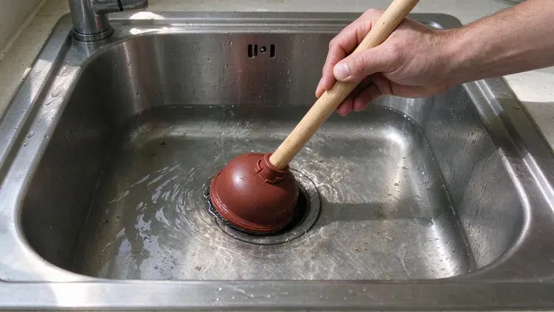

Why Kitchen Sinks Back Up
The kitchen drain takes more abuse than any other drain in the house. Grease and soap go down hot, cool in the pipe, and stick to the walls. Over a year or two that coating narrows a 1-1/2 inch drain line down to roughly the width of your finger. Then one big rinse finds the limit.
The Usual Causes
Grease is the main one. Bacon fat and cooking oil both harden once they cool. Running hot water after pouring grease only pushes it a few feet further, where it sets up in the horizontal run behind the wall. Wipe pans with a paper towel first.
Garbage disposals grind food, but they do not make it disappear. Coffee grounds and eggshells settle in the trap like wet sand. Stringy scraps like celery and onion skin wind around the disposal or mat up in the trap. Pasta and rice swell after they go down.
Many larger systems in Colorado draw on mountain snowmelt that runs fairly soft, while plains communities and groundwater sources often deliver more mineral-heavy water.
Hard water leaves scale inside older galvanized and cast iron drains, and that rough surface catches grease faster than smooth PVC. Houses built before the 1970s often still have galvanized drain arms in the kitchen wall. Those pipes rust closed from the inside. No amount of drain cleaner will open them back up for long.
Dishwasher and Disposal Connections
A sink that backs up when the dishwasher drains is a clue. The dishwasher pushes several gallons fast, and a partial clog downstream sends it right back up into the sink basin. So will a brand-new disposal installed with its knockout plug still in the dishwasher inlet. Check that first after a disposal swap.
Keeping the Line Clear
Prevention here is cheap. Pour cooled grease into a can and throw it out when it sets. Use plenty of cold water with the disposal, and let it run about 15 seconds after the motor quiets down. A basket strainer catches the rest.
Once a month, flush the line. Fill the sink with hot water and release it all at once. The sudden volume scours the trap and the drain arm behind the wall much better than a running faucet ever will. Skip boiling water if you have PVC drains, since repeated boiling water can soften the joints. Hot tap water is plenty.
Quick Fixes for a Minor Clog
Start with a cup plunger, not the flange type used on toilets. On a double sink, plug the other drain with a wet rag or a second stopper, or the plunger just pushes air out the other side. Give it ten to fifteen hard strokes. Leave the dishwasher off until it drains.
Next, pull the trap. With a bucket underneath, hand-loosen the two slip nuts and clear the U-bend. A lot of clogs are right there, in the first foot of pipe. A clean trap means the clog is in the wall, and a quarter-inch hand auger is the next tool to reach for.
Skip chemical drain cleaners. They rarely clear grease clogs and they sit in the trap when they fail. That leaves caustic water for whoever opens the line next, and it can damage older metal drains and the finish on some sinks. Enzyme cleaners are fine for maintenance.
When to Bring in a Plumber
Water rising in another fixture changes things. A tub that gurgles or a floor drain that bubbles as the sink drains puts the blockage in the main line rather than the kitchen branch. That takes a cable machine through a cleanout, or a hydro jetter for heavy grease. Do not keep running water.
Our techs at GFR Plumbing clear kitchen lines all over Colorado, and most kitchen calls are done in about an hour. A line that clogs again within a few months gets a camera. The office number is (720) 727-9398. Tell the dispatcher whether the dishwasher or the disposal was running when it backed up.
Need a licensed plumber in Colorado?
GFR Plumbing answers 24/7 and offers same-day service across Colorado.